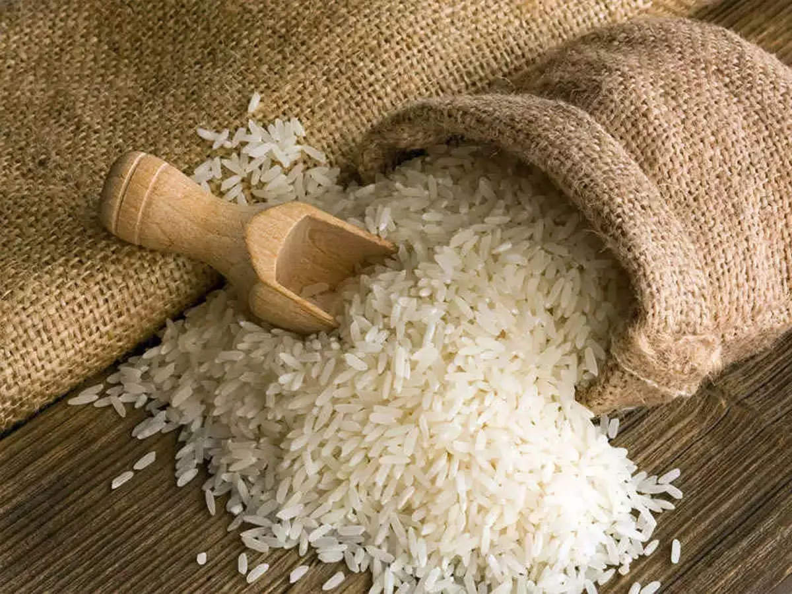
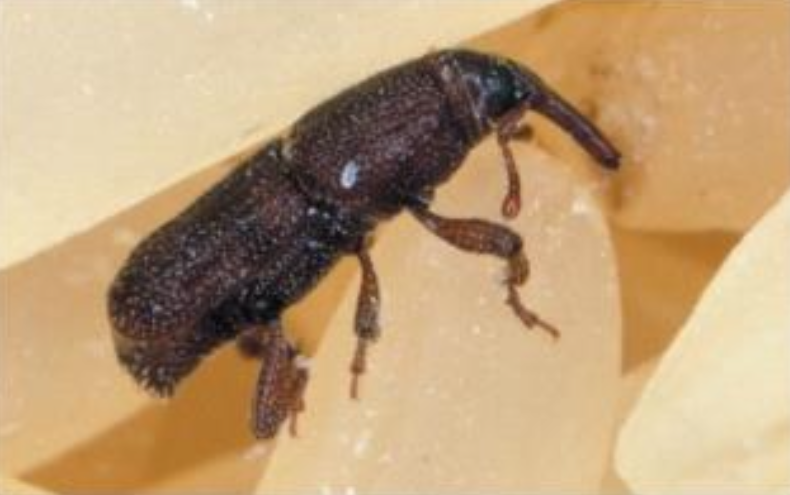

GENERAL INFORMATION
Rice is the most important food crop of India covering about one-fourth of the total cropped area and providing
food to about half of the Indian population. Punjab has made tremendous progress in rice productivity and
production during the past 45 years. Due to use of high yielding varieties and new technology Punjab has given
the title of "Rice Bowl of India".

Soil
It can be grown on a variety of soils with low permeability and pH varying from 5.0 to 9.5. Sandy loam to loamy
sand to silty loam to clay loams, silty to clayey loam soils with low permeability, free of water logging and
sodicity are considered best for paddy cultivation.
Popular Varieties With Their Yield
PR 128:
PR 128 of rice is an improved version of PAU 201. It possesses long slender
clear translucent grains.
Its average plant height is 110 cm and matures in about 111 days after transplanting. It is resistant to all the
10 presently prevalent pathotypes of bacterial blight pathogen in the Punjab state. Its average paddy yield is
30.5 quintals per acre.
PR 129:
PR 129 of rice is an improved version of PAU 201. It possesses long slender
clear translucent grains.
Its average plant height is 105 cm and matures in about 108 days after transplanting. It is resistant to all the
10 presently prevalent pathotypes of bacterial blight pathogen in the Punjab state. Its average paddy yield is
30.0 quintals per acre.
HKR 47:
HKR 47 is a mid-early maturity variety of rice. It takes 104 days to mature
after transplanting and its
average plant height is 117 cm. It is susceptible to all the 10 presently prevalent pathotypes of bacterial
blight pathogen in Punjab and is prone to lodging. Its average yield is 29.5 quintals per acre. It is suitable
for parboiling.
PR 111:
It is short-statured, stiff strewed variety and it leave are erect and dark
green in color. It matures
in 135 days. Its grains are long, slender and clear. It is resistant bacterial leaf blight disease and gives
average yield of 27 qtl/acre.
PR 113:
It is short-statured, stiff strewed variety and its leave is erect and dark
green in color. It matures
in 142 days. Grain is bold and heavy. It is resistant bacterial leaf blight disease and gives average yield of
28 qtl/acre.
PR 114:
It is semi-dwarf, stiff strewed variety having narrow, dark green erect
leaves.
It matures in 145 days.
Its grains are extra-long, clear translucent grains with very good cooking quality. It gives average yield of
27.5 qtl/acre"
PR 115:
It is semi-dwarf, stiff strewed variety having narrow, dark green erect
leaves.
It matures in 125 days.
Its grains are long slender, translucent with good cooking quality. It gives average yield of 25 qtl/acre.
PR 116: It is semi-dwarf, stiff strewed variety. It show resistant to lodging. Its leaves are light green and
erect. It matures in 144 days. Its grains are long, slender and translucent. Its average yield is 28
quintals/acre.
PR 118:
It is a semi-dwarf, stiff strewed and lodging tolerant variety. Its leaves
are
dark green and leaves are
erected. It matures in 158 days. Its grains are medium slender with good cooking quality. Its average yield is
29 qtl/acre.
PR 120:
It is semi dwarf variety with long slender and translucent grains with high
cooking quality. It matures
in 132 days. It gives average yield of 28.5 qtl/acre.
PR 121:
It is short, stiff strewed variety. It show resistant to lodging. Its leaves
are
dark green and erect.
It matures in 140 days. Its grains are long, slender and translucent. It is resistive to bacterial blight
pathogen. It gives average yield of 30.5 qtl/acre.
PR 122:
It is semi-dwarf, stiff strewed variety having dark green erect leaves. It
matures in 147 days. It
possesses long slender translucent grains with good cooking quality. It gives average yield of 31.5 qtl/acre.
PR 123:
It is semi dwarf, stiff strewed variety with dark green and erect leaves.
Its
grains are long, slender
and translucent. It is moderately resistant to bacterial blight pathogen. It gives average yield of 29 qtl/acre.
PR 126:
This variety is released by PAU for general cultivation in Punjab. It is an
early maturing which gets
mature in 123 days after transplanting. The variety is resistant to bacterial blight disease. It gives an
average yield of 30qtl/acre.
PR 127:
It is a medium maturing variety which matures in 137 days after seeding. The
plant attains the average
height of 104cm. The variety is not suitable for growing in alkali and brackish soils. It gives an average yield
of 30qtl/acre.
CSR 30:
The variety has extra-long slender shaped grains which are known for its
excellent cooking and good
eating qualities. The variety gets mature within 142 days after transplanting. It gives an average yield of
13.5qtl/acre.
Other state varieties:
Punjab Basmati 3:
Developed by PAU Ludhiana. It has excellent cooking and eating
quality. It is improved version
of basmati 386. It is resistant to lodging and Bacterial Blight. Its grains are extra-long and having excellent
aroma. It give average yield of 16qtl/acre.
Punjab Basmati 4:
It is a high yielding variety and semi dwarf variety which is 96cm
tall. It is a lodging
tolerant variety and is resistant to bacterial blight. The variety gets mature within 146 days after
transplanting. It gives an average yield of 17qtls/acre.
Punjab Basmati 5:
It is also a high yielding variety which gives an average yield of
15qtls/acre. The variety
gets mature within 137 days after transplanting.
Pusa Punjab Basmati 1509:
Early maturing variety i.e ready to harvest in 120 days.
It is susceptible to
bacterial blight. Its grains extra long, slender and possess excellent cooking quality. It is suitable for
multiple cropping pattern. It gives average yield of 15.7 qtl/acre.
Pusa Basmati 1121:
Tall variety and ready to harvest in 137 days. Aromatic variety
with longest cooking length
and having great cooking quality. It gives average yield of 13.7 qtl/acre.
Pusa 44:
Long duration variety and it is susceptible to bacterial blight.
Pusa Basmati 1637:
Released in 2018. The variety is moderately resistant to blast
diseases. The plant attains
the height of 109cm. The variety matures in 138 days and it gives an average yield of 17.5qtl/acre.
Hybrid 6201:
Suitable for irrigated areas. It give resistance to blast. It gives
average yield of 25 qtl/acre.
Vivek Dhan 62:
Suitable for hilly and irrigated areas. Its grains are short bold. It
gives resistant to blast.
Neck blast and it can survive in low temperature areas. It give average yield of 19 qtl/acre.
Karnataka Rice Hybrid 2:
Suitable for irrigated and timely sown areas. It is
tolerant to leaf blight and other
disease. It gives average yield of 35 qtl/acre.
Ratnagiri 1 and 2:
Ratnagiri one suitable for irrigated areas while Ratnagiri 2
suitable for low land areas.
These are semi dwarf varieties and give average yield of 19 qtl/acre and 21 qtl/acre respectively.
Land Preparation
After harvesting of wheat grow dhaincha (seed rate 20 kg/acre) or sunhemp @ 20 kg/acre or cowpea @ 12 kg/acre up
to first week of May. When crop is of 6-8 week old, bury them into the soil one day before transplanting of
paddy. It will save 25 kg of N per acre. Use laser land leveler for land levelling. After then puddle soil and
to obtained fine well levelled puddle field to reduce water loss through percolation.
Seed
Seed Rate:
8kg seeds are sufficient for planting in one acre land.
Seed treatment:
Before sowing, soak them in 10 Ltr water containing, Carbendazim@20gm+ Streptocycline@1gm for 8 to 10 hour
before sowing. After then dry seeds in shade. And then use for sowing.
Also you can use below mention fungicides to protect crop from root rot disease. Use chemical fungicides first
then treat seed with Trichoderma.
TABLE
| Fungicide/Insecticide name |
Quantity (Dosage per kg of seeds) |
| Trichoderma |
5-10 gm |
| Chlorpyriphos |
5ml |
Sowing
Time of sowing:
20 may to 5 june is the optimum time for sowing
Spacing:
For normal sown crop a spacing of 20 - 22.5 cm between rows is recommended. When sowing is delayed a closer
spacing of 15-18 cm should be adopted.
Method of sowing:
Broadcasting method
Sowing depth:
The seedlings should be transplanted at 2 to 3 cm depth. Shallow planting gives better yields.
Before sowing, soak them in 10 Ltr water containing, Carbendazim@20gm+ Streptocycline@1gm for 8 to 10 hour
before sowing. After then dry seeds in shade. And then use for sowing.
Nursery Management And Transplanting
Nursery Preparation:
15th to 30th May is the optimum time for nursery preparation.
Wet bed nursery:
It is done in region having adequate water availability. Nursery
area is about 1/10 of the area
to be transplanted. Broadcast Pre-germinated seeds on puddled and levelled soil. Keep the beds moist for the
first few days. Do not flood the beds. When the seedlings are about 2 cm high, keep the beds submerged in a
shallow layer of water. Apply dose of 26 kg/acre Urea about a fortnight after sowing. For transplantation use
seedlings of 15-21 days or when seedlings are 25-30 cm long. Regularly irrigated the nursery.
Dry Bed:
It is prepared in dry soil condition. Total seed bed area is about 1/10 of
the area to be transplanted.
Make seed bed of convenient dimensions with the soil raised at height of 6-10 cm. Spread half burned rice husk
on these beds for easy uprooting. Irrigation should be done properly because less moisture can damage seedling.
Incorporate basal fertilizer for proper nutrients.
Modified Mat nursery:
This is the modified method of nursery making which require
less space and less quantity
of seeds. It can be cultivated at any place having flat surface and assured water supply. The area needed is
about 1% of the transplantable land. Establishing seedlings in 4 cm layer of soil mix, arranged on a firm
surface. Make 1 meter wide and 20-30 meter long plot and spread plastic sheet or banana leaves on it. Place a
wooden frame with 4 cm deep and then fill the frame with soil mixture. Sow pre-germinated seed in it and cover
the seed with dry soil. Immediately sprinkle water on it. Irrigate frame as and when needed and keep it moist.
Seedlings are ready for transplanting within 11 to 14 days of sowing. Transport seedling mat to field and
separate them and transplant 1-2 seedlings at 20x20 cm or 25x25 cm spacing.
Depth of planting:
The seedlings should be transplanted at 2 to 3 cm depth. Shallow
planting gives better
yields.
Method of Transplanting
1) Flat puddled transplanting:
Transplant seedlings in line at 20x15 cm for normal
and 15x15 cm for late
transplanting. Put 2 seedlings per hill and the seedlings should be transplanted upright and about 2-3 cm deep.
2) Bed Transplanting:
Transplant seedlings on middle of slopes of bed. These bed are
prepared by wheat bed
planter in heavy soil. Before transplanting irrigate the furrows, then transplant seedlings by maintaining a
plant to plant distance of 9 cm.
3) Mechanical transplanting:
For transplanting Mat type nursery, mechanical
transplanter are used. It transplant
seedlings at spacing of 30x12 cm.
Fertilizer
Fertilizer Requirement (kg/acre)
TABLE
| UREA |
DAP |
SSP |
MOP |
ZINC |
| 110 |
27 |
75 |
20 |
- |
Nutrient Requirement (kg/acre)
TABLE
| NITROGEN |
PHOSPHORUS |
POTASH |
| 50 |
12 |
12 |
For paddy apply N:P:K@50:12:12 kg/acre in form of Urea @110 kg/acre, SSP@75 kg/acre and MOP@20 kg/acre. Before
fertilizer application, carried out soil test and apply fertilizer on the basis of soil test result. Apply P and
K dose if soil test show deficiency of it. If DAP is to be used, apply Urea@100 kg/acre, DAP@27 kg/acre and
MOP@20 kg/acre. Apply 1/3rd dose of Nitrogen and whole dose of P and K before last puddling.
Apply second dose three week after transplanting and three weeks after 2nd dose, apply remaining dose of
Nitrogen. Use neem coated Urea as it will increased uptake of N. Apply Zinc sulphate heptahydrate@25 kg or zinc
sulphate monohydrate@16 kg/acre at puddling to overcome zinc deficiency. Due to water scarcity, young leaves
give yellow or yellow white appearance about three week after transplanting. Apply irrigation immediately also
spray with ferrous sulphate@1 kg/100 ltr water per acre, two-three time with weekly intervals.
Weed Control
Use Butachlor 50 EC @ 1200 ml/acre or Thiobencarb 50 EC @ 1200 ml or Pendimethalin 30 EC @ 1000 ml or
Pretilachlor 50 EC @ 600 ml per acre as pre-emergence herbicides, 2 to 3 days
after transplanting. Mix any one of these herbicides in 60 kg of sand per acre and broadcast uniformly in 4-5 cm
deep standing water.
For broadleaf weed control, apply Metsulfuron 20 WP @ 30 gm/acre in 150 Ltr water as post emergence, 20-25 days
after transplanting. Before spray, drained out the standing water from the field and apply irrigation one day
after spray.
Irrigation
Keep field flooded up to two weeks after transplanting. When all water gets infiltrated two day after apply
irrigation in field. Depth of standing water should not exceed 10 cm. While doing intercultural and weeding
operation, drain out excess water from field and irrigate field after completion of this operations. Stop
irrigation about a fortnight before maturity to facilitate easy harvesting.
Plant protection
• Pest and their control:
Root Weevil:
The presence of root weevil can be detected by the root and leave
damage of yield. These are white
legless grub feeds mainly on root. Plant gives yellow appearance, growth gets stunted and few tillers are form.
If incidence is observed apply Carbaryl (4G)@10 kg either Phorate (10 G)@4 kg or Carbofuran (3 G) @10 kg per
acre.
Plant Hoppers:
These mainly occur in the irrigated wetland conditions or in rainfed
areas. The presence of pest
shows the browning of the yield, sooty moulds and honeydew present in bases where infected.
If incidence is observed to control, spray with Dichlorvos @ 126 ml or 400 gm Carbaryl in 250 Ltr of water per
acre or Imidacloprid @ 40 ml or Quinalphos 25 EC @ 400 ml or Chlorpyriphos @1 Ltr in 100 ltrs of water per acre.

Leaf folder:
This pest develops in high humidity and specifically found where rice
is fertilized heavily. Larva
fold the leaves and eat the plant tissue and produces white streaks.
Control: If infestation is observed spray crop with Cartap hydrochloride @ 170 gm or Triazophos @350 ml or
Chlorpyriphos @1 Ltr in 100 Ltr of water per acre.
Rice Hispa:
It is serious pest in some districts. Larva create tunnel into leaves
and thus destroyed leaves by
producing white streaks on leaves.
If Infestation is observed in field, spray crop with Methyl Parathion@120 ml or Quinalphos 25 EC@400 ml or
Chlorpyriphos @1 Ltr in 100 ltr of water per acre.
Stem borer:
Larva bore into the stem and causes dead heart. The old ones produce
empty ear heads which turn
white.
Control:
If infestation is observed in field take spray of Cartap hydrochloride @
170 gm or Triazophos @ 350 ml
or Chlorpyriphos @ 1 Ltr per 100 Ltr of water.
• Disease and their control:
Blast: Due to blast disease, spindle shaped spots with greyish centre and brown margin observed on the leaves.
Also give neck rot symptoms and panicles get fall over. Observed in areas having excessive use of Nitrogen.
If infestation is observed, spray with Zineb@500 gm/acre in 200 Ltr of water.
Karnal Bunt:
Few grains in panicle get affected first and part of grain gets
converted into black powder. In
severe condition whole panicle gets affected and black powder spread on leaves, grains etc.
To control this disease, avoid excess use of Nitrogen. When crop is at 10% flowering stage, take spray of Tilt
25 EC @200 ml/200 litre of water. Repeat the spray with interval of 10 days.
Brown leaf spot:
It produces oval, eye-shaped spots with a conspicuous dark-brown
dot in the centre and light
brown margin. Spots are developed on grains also. In low nutrient soil, this attacked more.
To keep check on this disease, give balance amount of nutrient. When crop is at boot stage take spray of
Tebuconazole @ 200 ml or Propiconazole @200 ml in 200 Ltr of water. After 15 days repeat the spray.
False smut:
This fungus developed large greenish velvety spore-balls on individual
grains. In humid, high
rainfall and cloudy conditions, chances of spread of disease are high. Excessive use of Nitrogen also increases
intensity of attack.
To control this disease spray with 500 gm Copper Oxychloride per acre in 200 Ltr of water at boot stage in crop.
With interval of 10 days, take spray with Tilt 25 EC @ 200 ml/200 liters of water.
Show More
Sheath blight:
On leaf sheath, greyish lesion with purple margin is developed. Later
these lesions get developed
and enlarge. In severe condition, poor grain filling is observed. Avoid excess use of Nitrogen. Keep field
clean.
If incidence of disease is observed, spray crop with Tebuconazole or Tilt 25 EC@200 ml or Carbendazim 25% @200
gm in 200 Ltrs of water per acre. Repeat the spray after 15 days interval.
Harvesting
Reap the yield once the panicles are developing fully as well as the crops get changed significantly yellow. The
yield is generally harvested manually by sickles or by blend harvester. The harvested crops, tied up into
compact bundles, strike it against really hard surface to split the grains from straw, accompanied by winnowing.
Post-Harvest
The post-harvest method includes some procedures which include the interval from harvest to utilization 1)
harvesting 2) threshing 3) cleaning 4) drying 5) warehouse 6) milling then transport to the trade.
Before the storage of grains to protect harvested stuff from pest and disease attack, mix 500 gm Neem seed dust
with 10 Kg of seed. To protect stored grains from pests attacked Mix Malathion 50 EC@30 ml/3 Ltr of water. Spray
for 1002meter storage area at every 15 days.
References
1.Punjab Agricultural University Ludhiana
2.Department of Agriculture
3.Indian Agricultural Research Instittute, New Delhi
4.Indian Institute of Wheat and Barley Research 5.Ministry of Agriculture & Farmers Welfare
TABLE
| heading1 |
heading2 |
| a |
b |
| C |
d |